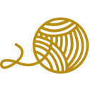

<div class="row no-gutters">
  <div class="col-12">
    <section class="section-intro">
      <app-header [theme]="headerThemes.BLACK"></app-header>
      <div class="row no-gutters p-lg-5 p-3">
        <div class="col-lg-5 col-12">
          <p class="f-48 text-gray text-bold text-lg-left text-center">What we can do for you</p>
        </div>
        <div class="col-lg-7 col-12">
          <p class="text-gray3 font-weight-light f-24-2 pb-5">Our Process is straightforward - every garment and repair is
            unique and requires an in-person exam to determine the best route back to perfect health.
            AlterKnit is a service business, and we do not sell fixed products. All our final pricing is
            determined through a hands-on professional assessment at our work studio.</p>
        </div>
      </div>
    </section>
    <section>
      <!-- Services -->
      <div class="p-lg-5 p-3 row no-gutters text-gray">
        <div class="col-lg-5 col-12 f-48 text-gray text-bold text-lg-left text-center">Services we offer</div>
        <div class="col-lg-7 col-12 mt-lg-0 mt-4">
          <div class="service">
            <p class="f-24 text-bold">Sweater repair</p>
            <p>
              Through a process known as REKNITTING, our repair team uses yarn from the original garment to REKNIT the
              damaged area matching the pattern and style. The work is done by hand and most times under a magnifying
              glass to make sure that it's done just right.
            </p>
          </div>
          <div class="service">
            <p class="f-24 text-bold">Suit repair</p>
            <p>
              For small damage on suits our repair team uses a method known as FRENCH REWEAVING, where the damaged area
              is rewoven. For larger damage on suits, a piece of fabric is taken from an unnoticeable area of the
              garment and is inlaid, matching the pattern of the garment exactly. In some cases, a faint outline might
              show.
            </p>
          </div>
          <div class="service">
            <p class="f-24 text-bold">General garment repair</p>
            <p>
              Even if the garment isn't a knit or woven we specialize in finding solutions for your damaged garments.
              Give us a call or send a picture. We'll see if there is anything that we can do to salvage it.
            </p>
          </div>
          <div class="service">
            <p class="f-24 text-bold">Knit restyling</p>
            <p>
              Have an ill-fitting knit? Sleeves too long? Love the sweater but hate the turtleneck? Kept your New
              Years'
              resolution and lost 25 lbs? We can alter sleeves, remove a turtleneck, shorten etc. It'll look like you
              bought it that way.
            </p>
          </div>
          <div class="service">
            <p class="f-24 text-bold">De-pill</p>
            <p>
              Does your favorite sweater seem unwearable due to accumulated pilling? Send us your sweater and our
              professionals will take care of all that fuzz.
            </p>
          </div>
          <div class="service">
            <p class="f-24 text-bold">Hand washing service</p>
            <p>
              Yes, we now offer hand washing. We will carefully hand wash, dry, fold and return your garments
              ready to
              wear.
            </p>
          </div>
          <div class="service">
            <p class="f-24 text-bold">Shoe & handbag repair</p>
            <div>
              <p>Shoes and Handbags need some attention? Just send them in along with your garments.</p>
              <p>
                Our are extensive. We replace soles, shorten heels, rebuild heels, taps, re-stitch and even keep
                those
                Christian Louboutin red bottoms, red.
              </p>
              <p>For handbags replace zippers and hardware, redye, clean and much more.</p>
            </div>
          </div>
          <div class="service">
            <p class="f-24 text-bold">Alterations</p>
            <p>
              We provide alterations from the simple to the complex. We can put an original hem on your
              favorite jeans,
              replace a zipper or the lining of a coat to more major adjustments.
            </p>
          </div>
          <div class="service">
            <p class="f-24 text-bold">Bridal services</p>
            <p>
              Getting married? In a wedding? Our team will give your dress alteration the attention to
              detail that it
              deserves. We have years of experience and we want to help you look and feel beautiful.
            </p>
          </div>
          <div class="service">
            <p class="f-24 text-bold">Garment cleaning</p>
            <p>
              Garment cleaning is the best way to maintain your clothing. We work with the best in the
              business. If you
              are shipping your garments to us, remember to indicate that you would like cleaning on your
              PACKING SLIP.
            </p>
          </div>
        </div>
      </div>
      <!-- Process -->
      <div class="p-lg-5 p-3 row no-gutters text-gray background-gray3">
        <div class="col-lg-5 col-12 f-48 text-bold">The Process</div>
        <div class="col-lg-7 col-12 f-24">
          <p>
            Our team is made of professional craftspeople with years of large-run textile and knitting production
            experience. Because of this we are able to perform repairs and knit alterations like no one else.
          </p>
          <p>
            Our speciality is reweaving and reknitting depending on whether it's a knit or woven fabric. It is done by
            hand and produces a nearly invisible repair and maintains the integrity of the garment. Fiber is
            discreetly taken from the original garment so the repair blends naturally into the fabric. If we are
            unable to take it from the garment itself, we have an extensive fiber library to draw upon.
          </p>
          <p>
            When reknitting or reweaving is not upon an option, we find another solutions to save your garment.
            Because we are based in New York we have access to fabrics, trims, leather and buttons. Thank you NYC
            Garment District! This allows to go that extra mile on repair solutions. We will make the damage a far
            distant memory!
          </p>
          <p>
            Finding a reweaver or reknitter was once very easy. But over the years, the skill was not passed on. Today
            there are only a handful of reputable sources from whom you can receive this service. We are proud to be
            keeping this lost art alive.
          </p>
        </div>
      </div>
      <!-- <div class="col-xl col-12 section-image-sewing"></div> -->
      <!-- Factors -->
      <div class="row no-gutters">
        <div class="p-lg-5 p-3 col-lg-5 col-12 f-36 text-bold text-white background-light-purple text-lg-left text-center">Factors we consider when Pricing
          Repairs</div>
        <div class="p-lg-5 p-3 col-lg-7 col-12 f-24 text-white background-dark-purple">
          <div class="row my-xl-5 my-xl-2">
            <div class="col-xl col-6 d-flex flex-column align-items-center justify-content-center">
              <figure class="text-center f-24">
                
                <figcaption class="pt-5 text-bold">1. Size and Extent of Damage</figcaption>
              </figure>
            </div>
            <div class="col-xl col-6 d-flex flex-column align-items-center justify-content-center">
              <figure class="text-center f-24">
                
                <figcaption class="pt-5 text-bold">2. Difficulty Harvesting Yarn or Thread</figcaption>
              </figure>
            </div>
            <div class="col-xl col-6 d-flex flex-column align-items-center justify-content-center">
              <figure class="text-center f-24">
                
                <figcaption class="pt-5 text-bold">3. Location of Damage</figcaption>
              </figure>
            </div>
            <div class="col-xl col-6 d-flex flex-column align-items-center justify-content-center">
              <figure class="text-center f-24">
                
                <figcaption class="pt-5 text-bold">4. Thickness of Garment</figcaption>
              </figure>
            </div>
          </div>
          <div class="f-18 text-white">
            <p><span class="text-danger">*</span> Price of repairs are not based on the original cost of the garment</p>
            <p>
              All prices are estimates and are based on the time and required solution. Estimates are for labor only
              and do not include additional material costs or additional services.
            </p>
          </div>
        </div>
      </div>
      <!-- Timing -->
      <div class="p-lg-5 p-3 row no-gutters text-gray background-gray3">
        <div class="col-lg-5 col-12 f-48 text-bold text-lg-left text-center">Timing</div>
        <div class="col-lg-7 col-12 f-24 mt-lg-0 mt-4">
          <p>
            We will provide you with an estimated time of completion. Orders requiring reknitting and/or reweaving are
            time-consuming as every garment needs custom attention and much patience. The majority of the repairs we
            make are done by hand. Please take this into consideration while you are waiting in the fix-it line.
          </p>
          <p>
            On average, most repairs take four to six weeks not including the shipping time. However, if you have a time
            constraint, please indicate that on your order slip. We offer rush service for an additional fee.
          </p>
          <p>
            At any point after you have joined the fix-it line you decide you would no longer like to wait, we will be
            sorry to see you go but will return your item for cost of shipping.
          </p>
        </div>
      </div>
      <div class="p-lg-5 p-3 row no-gutters faq-background">
        <div class="col-lg-5 col-12 f-36 text-bold text-white faq-title">
          <div class="f-48 text-lg-left text-center">Frequently Asked Questions</div>
          <div class="logo-2 d-lg-block d-none"></div>
        </div>
        <div class="col-lg-7 col-12 text-white">
          <div class="question f-18 text-bold mb-2 mt-3">How long will my garment repair take?</div>
          <div class="answer f-18 mb-2">The average turn around is 3 weeks on most repairs, excluding shipping time.
          </div>
          <div class="answer mb-2">More involved and intense repairs with extreme detail, multiple items, and/or extra
            services may take six to eight weeks.</div>
          <div class="answer mb-2">We offer Rush Service for an additional charge, feel free to ask!</div>

          <div class="question f-18 text-bold mb-2 mt-4">What will a garment repair look like afterward?</div>
          <div class="answer f-18 mb-2">We use a process called reweaving or reknitting (depending on the fabric) which
            produces a near-invisible repair.</div>

          <div class="question f-18 text-bold mb-2 mt-4">Can you fix snags?</div>
          <div class="answer f-18 mb-2">Yes! We love to fix snags.</div>

          <div class="question f-18 text-bold mb-2 mt-4">How about a tear? I tore my suit.</div>
          <div class="answer f-18 mb-2">Yes, we fix wovens every day.</div>

          <div class="question f-18 text-bold mb-2 mt-4">How do you match the yarn so it looks invisible?</div>
          <div class="answer f-18 mb-2">First we invisibly 'harvest' the yarn from the garment itself. We also have an
            extensive in-house fiber library.</div>

          <div class="question f-18 text-bold mb-2 mt-4">Do you offer cleaning?</div>
          <div class="answer f-18 mb-2">Yes! We want your clothes staying clean and hole-free.</div>

          <div class="question f-18 text-bold mb-2 mt-4">Can you get stains out?</div>
          <div class="answer f-18 mb-2">Yes we can.</div>

          <div class="question f-18 text-bold mb-2 mt-4">I have a torn neckline — can you reattach it?</div>
          <div class="answer f-18 mb-2">Yes, this is a very common repair.</div>

          <div class="question f-18 text-bold mb-2 mt-4">There is a huge hole in the underarm of my sweater. Is that
            fixable?</div>
          <div class="answer f-18 mb-2">Yes, it is fixable.</div>

          <div class="question f-18 text-bold mb-2 mt-4">Do you shorten sweaters?</div>
          <div class="answer f-18 mb-2">Yes, we shorten all body lengths including sleeves.</div>

          <div class="question f-18 text-bold mb-2 mt-4">My sweater is stretched out on the sides, is that fixable?
          </div>
          <div class="answer f-18 mb-2">Yes we can take your sweater in by the seams and also taper baggy sleeves.</div>

          <div class="question f-18 text-bold mb-2 mt-4">I don't like the neckline. Can you alter it?</div>
          <div class="answer f-18 mb-2">Yes, we can restyle collars and plackets and other areas of the garment.</div>
        </div>
      </div>
    </section>
    <app-footer></app-footer>
  </div>
</div>
